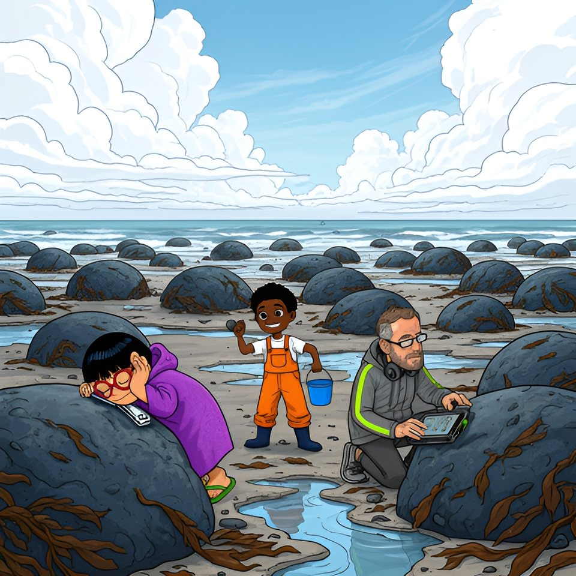

Titistoire › Les Galaxies (8-10 ans)
Celle qui se tait
Le Trésor coupé en deux, épisode 6 sur 8 : un feuilleton à énigmes sur l'île de Lodenn.

▶ Écouter et regarder l'histoire
Gratuit, sans inscription : la voix lit, le texte suit mot à mot, les images tournent comme dans un album.
Le texte de l'histoire
Dans la chapelle, Enora a frotté son crayon sur une dalle, et Victoire a lu la troisième leçon devant Maël, Tino, Awa et Oscar. Le soir même, Gildas a salué les deux bandes : « À dans trois jours, aux Chanteuses. » Quelqu'un a parlé ; et voici ce que disait la dalle.
« Troisième leçon : ce qui ne navigue plus peut encore abriter. La quatrième t'attend chez mes chanteuses, qui ne chantent que les pieds au sec. Frappe à chaque porte : elles te répondront clair. Une seule a la voix sourde. Elle garde ce qu'on lui a confié. »
Le lendemain matin, on se retrouva à la crêperie, terrain neutre. Les deux moitiés de la carte étaient posées bord à bord, chacune sous la main de son propriétaire. Personne n'avait commandé de crêpe. Cela ne s'était jamais vu.
« En fait, attaqua Awa, il n'y en a qu'un, ici, qui répète tout ce qu'il entend. » Les trois Tongs regardèrent la salopette orange. Tino ouvrit la bouche toute grande. « J'ai rien répété ! C'est pas moi qui… » Il chercha quelqu'un à citer. Il n'y avait personne. Il se tut.
« Avis de grand frais, coupa Maël, très bas. Tino ne m'a pas quitté d'une botte. Mais il y a un monsieur qui passe ses journées au bout du Môle, à bavarder avec l'homme du bateau gris. » Victoire se leva si vite que sa chaise bascula. « Objection. Mon père ne sait rien. »
« Il sait ce que tu lui racontes, répliqua Maël. — Je ne raconte rien ! C'est vous qui ne savez pas tenir votre langue, sur votre île ! » Elle l'avait dit. Votre île. La clause deux du traité venait de tomber par terre, et personne ne se baissa.
Alors les vieilles phrases sortirent toutes seules, celles qu'on leur avait apprises avant de leur apprendre à nager. « Ton ancêtre a filé avec sa part ! cria Maël. — La tienne a tout gardé ! lança Victoire. — Azénor, née un soir de maline… — Nolwenn aussi, figure-toi ! »
Il se fit un grand silence. On entendit la pâte grésiller sur la plaque, et le Douanier marcher sur le parapet. Tino leva le doigt, comme à l'école. « Le même soir ? » Personne ne répondit. Personne n'écoutait jamais le plus petit.
Victoire roula sa moitié, la glissa dans le tube de cuir et serra la courroie. Maël rangea la sienne dans la boîte à biscuits et appuya sur le couvercle. Sur la table, il ne resta que la marque de deux coudes. Oscar tenait son harmonica contre sa bouche. Il n'en sortit rien.
Victoire traversa le quai, droite comme un mât. Au bureau du port, elle décrocha le flotteur rose, celui qui avait séché sur le dos de la Coque, et le posa devant Job. « Je vous le rends. Les hirondelles n'en ont pas besoin. »
Job regarda le flotteur. Il regarda la grande fille. Il ne répondit pas que cela dépendait de la marée ; il ne fit même pas « hein ? ». Il rangea le liège dans son tiroir, sans un mot. Au rang du large, le vieux flotteur gris tournait un peu sur sa ficelle.
Alors Enora, qui n'avait pas ouvert la bouche de la matinée, s'avança sur la cale. « C'est moi. Il m'a demandé où menait la suite, et j'ai répondu. » Ni vérité vraie, ni pour cent : rien autour. « C'est vrai. »
Elle avait dit la vérité, pour une fois, au seul homme de l'île qui l'avait crue. « Enora : houle », lâcha Maël, et l'on ne sut pas s'il la croyait, lui. Victoire ne se retourna pas. Ses tongs blanches claquèrent jusqu'à la plage des Dames.
Deux jours passèrent, très longs. Sur l'ardoise, la mer reprenait des forces — soixante-deux, soixante-dix-huit — et le Sillon se découvrit sans que personne y pose la botte. Maël rangea la Coque tout seul. Enora essuya cent assiettes sans leur raconter une seule histoire.
À la Cabine, Victoire relisait sa moitié de carte, toute seule, donc de travers. Awa gagna une régate contre personne. Le midi, Fañch chantait le couplet de l'île ; le soir, une berceuse montait de la plage des Dames, avec l'autre. La chanson était retombée en deux morceaux.
Seule la chapelle ne sut rien de la brouille. Tino y montait compter les côtes de la Rieuse, Oscar s'allonger sur un banc. Ils ne s'étaient pas donné rendez-vous. « Trente-deux », annonçait Tino. Oscar jouait un la. C'était toute la conversation.
Le troisième jour, l'ardoise disait quatre-vingt-treize, basse mer à douze heures vingt. À onze heures vingt, la mer lâcha les Chanteuses. Trois flotteurs, le jaune, le vert et l'orange, pendaient déjà au rang de la grève, et les Bottes descendaient derrière l'eau, un galet dans chaque main.
Quarante rochers ronds luisaient sur le sable, gros comme des vaches couchées. Maël frappa le premier. Dong. Au vingtième, ils avaient la tête pleine de cloches : quand un rocher sonnait, ses voisins sonnaient encore. « Elles chantent toutes pareil », constata Tino.
Les Tongs arrivèrent par le mauvais côté. Victoire n'avait plus de flotteur ; elle descendait donc comme descendent les hirondelles, derrière son père, lequel connaissait, techniquement, un raccourci. Le raccourci traversait tout le goémon de la grève. Ils en sortirent les tongs à la main, Oscar sur la pointe des pieds.
Personne ne se salua. Les Bottes frappaient d'un côté, les Tongs de l'autre. Entre les deux, à genoux dans le sable, Gildas collait contre chaque rocher une ventouse reliée à sa tablette, le casque sur les oreilles. Il était arrivé à l'heure. Sur son écran clignotait un seul mot : erreur.
Tino regarda Maël, qui frappait sans écouter. Il regarda Oscar, qui écoutait sans frapper, parce qu'il aurait fallu toucher un galet mouillé. Alors il traversa, sans demander la permission à personne. « Racso. Je tape, tu écoutes. — Reçu, Onit », répondit Oscar en essuyant ses lunettes.
Oscar colla l'oreille contre la pierre, ferma les yeux, leva un doigt. Tino frappa. « La. » Le rocher suivant. « La, un peu bas. » Le suivant. « Sol. » Là-haut, l'heure filait vers la cloche. Onze rochers. Dix-sept. Vingt-six.
Au trente et unième, Tino frappa, et le doigt d'Oscar resta en l'air. « Encore. » Tino frappa encore. « Poc, prononça Oscar en rouvrant les yeux. Celle-là fait poc. Elle ne chante pas : elle a quelque chose dans la bouche. » Et pour la première fois depuis trois jours, il fit « tadam », tout doucement.
La Chanteuse muette portait une jupe de goémon jusqu'au sable. Oscar recula d'un pas. Tino souleva les algues comme un rideau : dessous, le rocher était creux, une niche grande comme un seau, avec une petite ancre gravée au bord. Il compta les crabes. Zéro. Il recompta.
Puis il plongea le bras et ramena une ardoise gravée, verdie par la mer. Ils furent six autour d'elle, d'un coup, Bottes et Tongs mêlés : on ne boude pas devant une ardoise. Victoire la prit. Elle seule savait lire les s du capitaine.
Elle lut : « Quatrième leçon : frappe, et écoute. Ce qui est plein chante ; ce qui garde un secret répond tout bas. Tu sais l'heure, la mesure, l'abri et l'écoute. Il te reste à savoir où regarder. »
« Va le plus loin que la mer te laisse aller, entre les sœurs de pierre. Ce que j'y ai écrit se lit dans les deux sens. » Elle se tut. Une ombre longue s'était posée sur l'ardoise : quelqu'un lisait par-dessus leurs épaules, son casque autour du cou.
Gildas relut tout haut, lentement, comme on reporte une mesure : « Va le plus loin que la mer te laisse aller, entre les sœurs de pierre. Ce que j'y ai écrit se lit dans les deux sens. » Puis : « Bravo, l'équipe. Trente et un rochers. Mon appareil n'en a pas trouvé un. »
« Les sœurs de pierre, murmura Victoire. C'est écrit sur ma moitié, à côté des deux tours. — Les Jumelles, traduisit Maël. Le plus loin que la mer laisse aller : la Chaussée. Dans deux jours, à la Grande Basse. » C'étaient leurs premiers mots depuis trois jours, et ils les échangèrent sans se regarder.
« Justement, reprit Gildas, et il avait l'air sincèrement ennuyé. Je préfère vous prévenir : j'ai une autorisation de fouille, en règle. Pendant la Grande Basse, le tour des Jumelles m'est réservé. Personne à moins de vingt mètres. C'est mesuré. »
Là-haut, sur la cale, la cloche se mit à sonner. Douze heures vingt. Gildas salua, ramassa sa ventouse. « Bon retour, l'équipe. » Et tout le monde fit demi-tour, sans courir, comme on fait toujours à la cloche.
On remonta la grève en une seule file, ce que personne n'avait décidé. Devant, Tino et Oscar se disputaient pour savoir si un poc est une note. Derrière marchaient deux chefs qui regardaient chacun un côté de la mer.
Au bureau du port, Maël tira la boîte à biscuits de sous son ciré. Il l'ouvrit et tendit sa moitié à Victoire, à bout de bras, les yeux sur le large. La clause un défendait de lâcher sa moitié. Il la lâchait. « Mer agitée à peu agitée », annonça-t-il.
Victoire ne la prit pas. Elle déroula la sienne sur le rebord de la fenêtre, et attendit. Maël posa sa moitié contre, bord à bord. Les dents de loup se refermèrent. Dans le bureau, un tiroir s'ouvrit ; le flotteur rose en sortit tout seul, au bout d'une vieille main. Victoire le raccrocha. « Marché conclu. »
Il resta trois questions à emporter dans six lits. Qu'est-ce qui se lit dans les deux sens ? Comment approcher de deux rochers gardés à vingt mètres par un homme très poli ?
Et la troisième, Tino la retournait tout seul sous sa couverture, puisque personne n'en voulait : le même soir ? Ce soir-là, la mer revint border Lodenn, comme tous les soirs. Sur l'ardoise de la cale, Job écrivit le chiffre du lendemain : cent cinq.
Épisode suivant : Retourne-toi